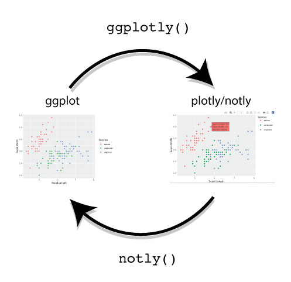

Adds the ability to turn a ggplotly object plot back into a ggplot in Plotly R

Circle of Notly
Notly has the following functions:
notly::ggplotly() which should override plotly::ggplotly() by adding the ggplot object to the output plotly object.
notly::notly() which is basically the inverse function to plotly::ggplotly(), i.e. it extracts the ggplot object back out of the plotly object.
This way if you’ve saved an interactive plotly object you can recover the ggplot from it for static output e.g. pdf!
Installation:
# install.packages("devtools")
devtools::install_github("gdmcdonald/notly")Example usage:
library(ggplot2)
library(plotly)
library(notly)
data(iris)
# Create a ggplot
ggplot_object <-
iris %>%
ggplot(aes(x = Sepal.Length,
y = Sepal.Width,
color = Species))+
geom_point()
# Create a plotly object - but with the ggplot hiding inside of it as well
notly_obj <-
ggplot_object %>%
ggplotly
notly_obj
# Extract the ggplot again
ggplot_obj_again <-
notly_obj %>%
notly
ggplot_obj_again